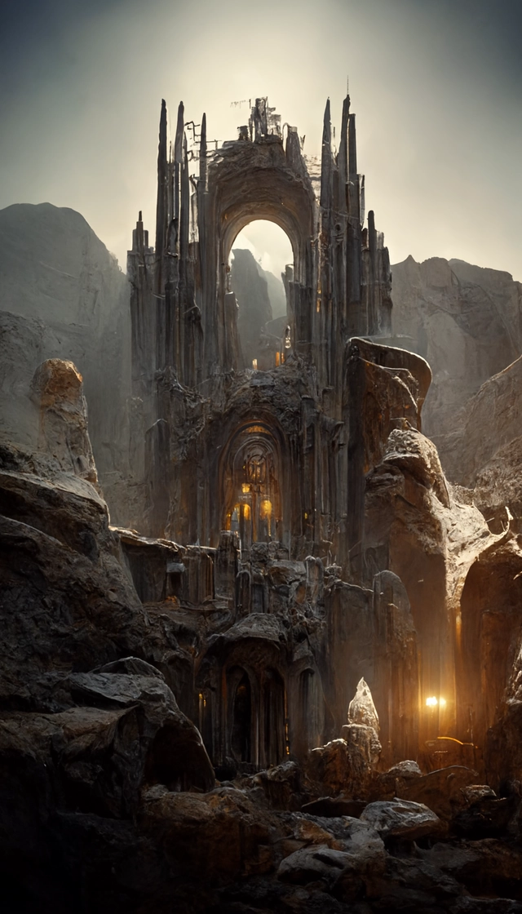
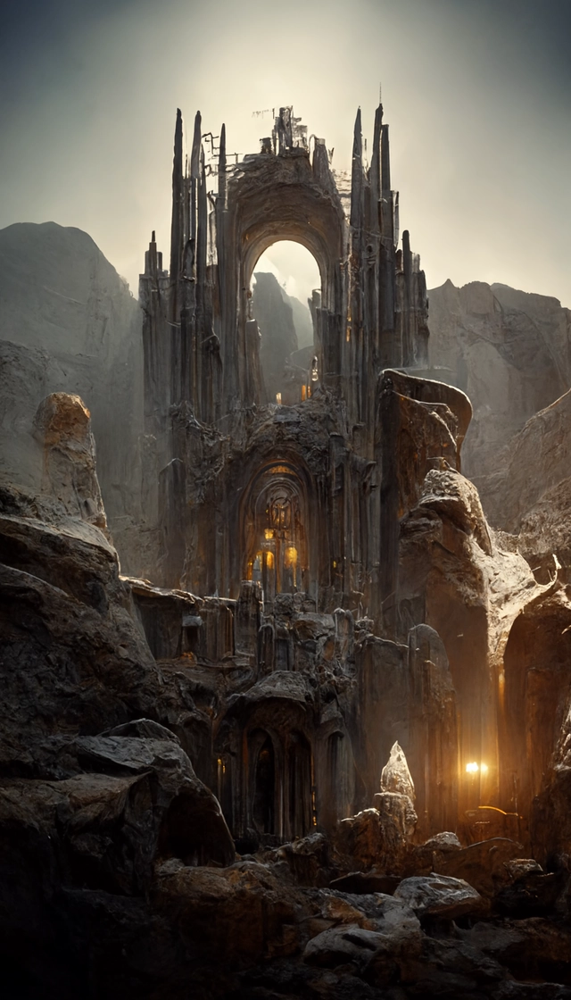

History
上世纪70年代
AI作画鼻祖"AARON"
计算机是上世纪60年代出现的，而就在70年代,一位艺术家，哈罗德·科恩Harold Cohen（画家，加利福尼亚大学圣地亚哥分校的教授） 就开始打造电脑程序“AARON”进行绘画创作。只是和当下AI绘画输出数字作品有所不同，AARON是真的去控制一个机械臂来作画的。
AARON的改进一直持续了几十年。
AARON的代码没有开源，所以其作画的细节无从知晓，但可以猜测，ARRON只是以一种复杂的编程方式描述了作者Harold本人对绘画的理解。
在80年代的时候，ARRON"掌握"了三维物体的绘制；
90年代时，AARON能够使用多种颜色进行绘画；
据称直到今天，ARRON仍然在创作。
但它仍然只能产生色彩艳丽的抽象派风格画作，这正是 Harold Cohen 本人的抽象色彩绘画风格。
2006年The Painting Fool
2006年亮相的图形软件绘画傻瓜（The Painting Fool），由伦敦帝国理工学院计算创造力研究员西蒙 · 科尔顿（Simon Colton）博士创造。绘画傻瓜具有模拟物理绘画过程的熟练行为、“理解“人类情感的欣赏行为，以及发明现实中不存在视觉对象和场景的想象行为。绘画傻瓜的特殊之处在于能以“人性化”的方式进行分析和响应，能够基于机器视觉检测人的情绪并使用它来绘制不同风格的肖像。
2012年脱离古典式绘画
在2012年，Google两位大名鼎鼎的AI大神，Andrew Ng和Jef Dean进行了一场空前的试验。联手使用1.6万个CPU训练了一个当时世界上最大的深度学习网络。用来指导计算机画出猫脸图片。当时他们使用了来自youtube的1000万个猫脸图片，1.6万个CPU整整训练了3天，最终得到的模型，令人振奋的可以生成一个非常模糊的猫脸。
这是一次具有突破意义的尝试，正式开启了深度学习模型支持的AI绘画这个“全新”研究方向。
2015年Deep Dream深梦
Google 推出计算机视觉程序——深梦（Deepdream），它使用深度卷积神经网络（Convolutional neural network, CNN）学习和增强图像模式，从而风格化图像创造出某种超现实主义“幻觉”，这催生了一种名为“Inceptionism”的新艺术形式。
深梦发布了一系列画作，一时吸引了很多眼球。谷歌甚至为这个深梦的作品策划了一场画展。
但如果较真一下，深梦与其说是AI绘画，更像是一个高级AI版滤镜，其滤镜风格一看上面的作品便可明白。
2021年初DALL-E系统
美国人工智能非营利组织OpenAI于2021年1月份推出Dall—E，这是一个可以根据书面文字生成图像的人工智能系统，该名称来源于著名画家达利（Dalí）和机器人总动员（Wall-E）。
该系统可以根据简单的描述创建极其逼真和清晰的图像，精通各种艺术风格，包括插画和风景等。它还可以生成文字来制作建筑物上的标志，并分别制作同一场景的草图和全彩图像。
OpenAI的模型DALL-E 2于本月初发布，刚一亮相，便在图像生成和图像处理领域卷起了新的风暴。
只需要给到寥寥几句文本提示，DALL-E 2就可以按文本指示生成全新图像，甚至能将毫不相关的物体以看似合理的语义方式组合在一起。
2021年4月，入选由技术领域全球知名大学组成的Netexplo大学网络历时一年，在全球范围内遴选出的10项极具突破性的数字创新技术。
Algorithm
深度学习
机器学习的三个要素：
1、输入数据点；例如,如果你的任务是为图像添加标签,则这些数据点可能是图像。
2、预期输出的示例；例如，对于图像标记任务来说，预期输出可能是“猫”“狗”之类的标签。
3、衡量算法效果好坏的方法；这一衡量方法是为了计算算法的当前输出和预期输出的差距。衡量结果是一种反馈信号，用于调节算法的工作方式，这个调节的过程就是我们所说的学习。
机器学习和深度学习的核心问题就在于有意义的变换数据,即学习输入数据的有用表示。机器学习的技术定义：在预先定义好的可能性空间中，利用反馈信号的指引寻找输入数据的有用表示。深度学习强调从连续的层中进行学习，这些层对应于越来越有意义的表示，可以将深度学习看作多级信息蒸馏操作，信息穿过连续的过滤层，其纯度越来越高（即对任务的帮助越来越大）。
用三张图理解深度学习的工作原理
我们知道，机器学习是找到将输入数据映射到目标结果的规则，而深度学习是通过一系列的数据变换（层）来实现输入数据到目标结果的映射。在深度学习中，每层的变换由一组权重来进行实现。因此，学习的意思就是为神经网络的所有层找到一组权重值，使得该网络能够将每个示例输入与其目标正确地一一对应。
但问题时，我们的神经网络有很多层，然后每层有很多的神经元。那么如何为每个神经元选择合理的参数呢？这就首先需要知道输出值和预期值之间的差距，衡量输出值和预期值之间的距离的函数叫做神经网络的损失函数，也叫做目标函数。损失函数的输入是网络预测值和真实目标值，然后计算出一个距离值，衡量该网络在这个示例上的效果好坏。
我们的目标是找到输入数据的合理表示因此需要对不合理的效果进行调整。深度学习的基本技巧是利用这个距离值作为反馈信号来对权重值进行微调，以降低当前示例对应的损失值。这种调节有优化器（optimizer）完成，它实现了反向传播算法，这是深度学习中的核心算法。
因此深度学习的完整工作原理如下：
1、对神经网络的权重随机赋值，由于是对输入数据进行随机的变换，因此跟预期值可能差距很大，相应地，损失值也很高；
2、根据损失值，利用反向传播算法来微调神经网络每层的参数，从而较低损失值；
3、根据调整的参数继续计算预测值，并计算预测值和预期值的差距，即损失值；
4、重复步骤2,3，直到整个网络的损失值达到最小，即算法收敛。
深度学习优点
机器学习技术（浅层学习）仅将输入数据变换到一两个连续的表示空间，通常使用简单的变换，这通常无法得到复杂问题所需要的精确表示。因此，人们必须竭尽全力让输入数据更适合这些方法来处理，也必须手动为数据设计好表示层，这个过程叫做特征工程。
深度学习的优点在于它在很多问题上都变现出更好的性能，并且简化了问题的解决步骤，因为它将特征工程完全自动化。利用深度学习，你可以一次性学习所有特征，而无须自己手动设计。这极大地简化了机器学习工作流程，通常将复杂的多阶段流程替换为一个简单的、端到端的深度学习模型。
深度学习的变革性在于，模型可以在同一时间共同学习所有表示层，而不是依次连续学习（这被称为贪婪学习）。通过共同的特征学习，一旦模型修改某个内部特征，所有依赖于该特征的其他特征都会相应地自动调节适应，无须人为干预。
深度学习从数据中进行学习时有两个基本特征：第一，通过渐进的、逐层的方式形成越来越复杂的表示；第二，对中间这些渐进的表示共同进行学习，每一层的变化都需要同时考虑上下两层的需要
Diffusion算法
最近大火的AI作画吸引了很多人的目光，AI作画近期取得如此巨大进展的原因个人认为有很大的功劳归属于Stable Diffusion的开源。Stable diffusion是一个基于Latent Diffusion Models（潜在扩散模型，LDMs）的文图生成（text-to-image）模型。具体来说，得益于Stability AI的计算资源支持和LAION的数据资源支持，Stable Diffusion在LAION-5B的一个子集上训练了一个Latent Diffusion Models，该模型专门用于文图生成。
Latent Diffusion Models通过在一个潜在表示空间中迭代“去噪”数据来生成图像，然后将表示结果解码为完整的图像，让文图生成能够在消费级GPU上，在10秒级别时间生成图片，大大降低了落地门槛，也带来了文图生成领域的大火。所以，如果你想了解Stable Diffusion的背后原理，可以跟我一起深入解读一下其背后的论文High-Resolution Image Synthesis with Latent Diffusion Models（Latent Diffusion Models），同时这篇文章后续也会针对ppdiffusers的相关代码进行讲解。该论文发表于CVPR2022，第一作者是Robin Rombach，来自德国慕尼黑大学机器视觉与学习研究小组。
Stable Diffusion
Stable Diffusion基于Latent Diffusion Models，专门用于文图生成任务。目前，Stable Diffusion发布了v1版本，即Stable Diffusion v1，它是Latent Diffusion Models的一个具体实现，具体来说，它特指这样的一个模型架构设置：自动编码器下采样因子为8，UNet大小为860M，文本编码器为CLIP ViT-L/14。官方目前提供了以下权重：
1、sd-v1-1.ckpt: 237k steps at resolution 256x256 on laion2B-en. 194k steps at resolution 512x512 on laion-high-resolution (170M examples from LAION-5B with resolution >= 1024x1024).
2、sd-v1-2.ckpt: Resumed from sd-v1-1.ckpt. 515k steps at resolution 512x512 on laion-aesthetics v2 5+ (a subset of laion2B-en with estimated aesthetics score > 5.0, and additionally filtered to images with an original size >= 512x512, and an estimated watermark probability < 0.5. The watermark estimate is from the LAION-5B metadata, the aesthetics score is estimated using the LAION-Aesthetics Predictor V2).
3、sd-v1-3.ckpt: Resumed from sd-v1-2.ckpt. 195k steps at resolution 512x512 on "laion-aesthetics v2 5+" and 10% dropping of the text-conditioning to improve classifier-free guidance sampling.
4、sd-v1-4.ckpt: Resumed from sd-v1-2.ckpt. 225k steps at resolution 512x512 on "laion-aesthetics v2 5+" and 10% dropping of the text-conditioning to improve classifier-free guidance sampling.
论文贡献
1、Diffusion model相比GAN可以取得更好的图片生成效果，然而该模型是一种自回归模型，需要反复迭代计算，因此训练和推理代价都很高。论文提出一种在潜在表示空间（latent space）上进行diffusion过程的方法，从而能够大大减少计算复杂度，同时也能达到十分不错的图片生成效果。
2、相比于其它空间压缩方法（如），论文提出的方法可以生成更细致的图像，并且在高分辨率图片生成任务（如风景图生成，百万像素图像）上表现得也很好。
3、论文将该模型在无条件图片生成（unconditional image synthesis）, 图片修复（inpainting）,图片超分（super-resolution）任务上进行了实验，都取得了不错的效果。
4、论文还提出了cross-attention的方法来实现多模态训练，使得条件图片生成任务也可以实现。论文中提到的条件图片生成任务包括类别条件图片生成（class-condition）, 文图生成（text-to-image）, 布局条件图片生成（layout-to-image）。这也为日后Stable Diffusion的开发奠定了基础。
方法
Latent Diffusion Models整体框架如图，首先需要训练好一个自编码模型（AutoEncoder，包括一个编码器 和一个解码器 ）。这样一来，我们就可以利用编码器对图片进行压缩，然后在潜在表示空间上做diffusion操作，最后我们再用解码器恢复到原始像素空间即可，论文将这个方法称之为感知压缩（Perceptual Compression）。个人认为这种将高维特征压缩到低维，然后在低维空间上进行操作的方法具有普适性，可以很容易推广到文本、音频、视频等领域。
在潜在表示空间上做diffusion操作其主要过程和标准的扩散模型没有太大的区别，所用到的扩散模型的具体实现为 time-conditional UNet。但是有一个重要的地方是论文为diffusion操作引入了条件机制（Conditioning Mechanisms），通过cross-attention的方式来实现多模态训练，使得条件图片生成任务也可以实现。
下面我们针对感知压缩、扩散模型、条件机制的具体细节进行展开。
图片感知压缩（Perceptual Image Compression）
感知压缩本质上是一个tradeoff，之前的很多扩散模型没有使用这个技巧也可以进行，但原有的非感知压缩的扩散模型有一个很大的问题在于，由于在像素空间上训练模型，如果我们希望生成一张分辨率很高的图片，这就意味着我们训练的空间也是一个很高维的空间。引入感知压缩就是说通过VAE这类自编码模型对原图片进行处理，忽略掉图片中的高频信息，只保留重要、基础的一些特征。这种方法带来的的好处就像引文部分说的一样，能够大幅降低训练和采样阶段的计算复杂度，让文图生成等任务能够在消费级GPU上，在10秒级别时间生成图片，大大降低了落地门槛。
感知压缩主要利用一个预训练的自编码模型，该模型能够学习到一个在感知上等同于图像空间的潜在表示空间。这种方法的一个优势是只需要训练一个通用的自编码模型，就可以用于不同的扩散模型的训练，在不同的任务上使用。这样一来，感知压缩的方法除了应用在标准的无条件图片生成外，也可以十分方便的拓展到各种图像到图像（inpainting，super-resolution）和文本到图像（text-to-image）任务上。
由此可知，基于感知压缩的扩散模型的训练本质上是一个两阶段训练的过程，第一阶段需要训练一个自编码器，第二阶段才需要训练扩散模型本身。在第一阶段训练自编码器时，为了避免潜在表示空间出现高度的异化，作者使用了两种正则化方法，一种是KL-reg，另一种是VQ-reg，因此在官方发布的一阶段预训练模型中，会看到KL和VQ两种实现。在Stable Diffusion中主要采用AutoencoderKL这种实现。
潜在扩散模型（Latent Diffusion Models）
首先简要介绍一下普通的扩散模型（DM），扩散模型可以解释为一个时序去噪自编码器（equally weighted sequence of denoising autoencoders） ，其目标是根据输入 去预测一个对应去噪后的变体，或者说预测噪音，其中是输入 的噪音版本。
其中t从（1,2......T）中均匀采样获得。而在潜在扩散模型中，引入了预训练的感知压缩模型，它包括一个编码器 和一个解码器 。这样就可以利用在训练时就可以利用编码器得到 ，从而让模型在潜在表示空间中学习，
实验
论文的所用到的模型为LDMs，在无条件图片生成任务上用到的数据集为LSUN、FFHQ以及CelebA-HQ，在类别条件图片生成用到的数据集为ImageNet，在文图生成任务上用到的数据集为Conceptual Captions、LAION。论文设计了大量的对比实验，并分别对感知压缩权衡（下采样因子）、LDM生成效果对比进行了分析验证。并且还在其他任务上进行了实验，包括Super-Resolution、Inpainting、layout-condition在内的多种图片生成等任务，这说明说明LDMs中的学习到的潜在表示空间确实具备很强的分布拟合能力，能够够适配各种下游任务。
LDM生成效果（Image Generation with Latent Diffusion）
论文从FID和Precision-and-Recall两方面对比LDM的样本生成能力，实验数据集为CelebA-HQ、FFHQ和LSUN-Churches/Bedrooms，实验结果如下：
Language model
Language model主要将输入的文本提示转化为可以输入到diffusion model使用的表示形式，通常使用embedding加上一些random noise输入到下一层。diffusion model主要是一个时间条件U-Net，它将一些高斯噪声和文本表示作为模型输入，将对应的图像添加一点高斯噪声，从而得到一个稍微有噪点的图像，然后在时间线上重复这个过程，对于稍微有噪点的图像，继续添加高斯噪声，以获得更有噪点的图像，重复多次到几百次后就可以获得完全嘈杂的图像。这么做的过程中，知道每个步骤的图像版本。然后训练的NN就可以将噪声较大的示例作为输入，具有预测图像去噪版本的能力。在训练过程中，还有一个encoder，是decoder的对应部分，encoder的目标是将输入图像转化为具有高语义意义的缩减采样表示，但消除与手头图像不太相关的高频视觉噪声。这里的做法是将encoder与diffusion的训练分开。这样，可以训练encoder获得最佳图像表示，然后在下游训练几个扩散模型，这样就可以在像素空间的训练上比原始图像计算少64倍，因为训练模型的训练和推理是计算最贵的部分。decoder的主要作用就是对应encoder的部分，获得扩散模型的输出并将其放大到完整图像。比如扩散模型在64x64 px上训练，解码器将其提高到512x512 px。DALL-E 2DALL-E 2其实是三个子模块拼接而成的，具体来说：一个基于CLIP模型的编码模块，目标是训练好的文本和图像encoder，从而可以把文本和图像都被编码为相应的特征空间。一个先验（prior）模块，目标是实现文本编码到图像编码的转换。一个decoder模块，该模块通过解码图像编码生成目标图像。在本篇文章开始前，希望你可以了解go的一些基本的内存知识，不需要太深入，简单总结了如下几点：
从上面的模型拆解中可以看出，DALL-E 2和Stable Diffusion的text encoder都是基于openAI提出的CLIP，图像的生成都是基于diffusion model。其中，CLIP是学习任意给定的图像和标题（caption）之间的相关程度。其原理是计算图像和标题各自embedding之后的高维数学向量的余弦相似度（cosine similarity）。

Effect
意义
长期以来，AI绘画囿于技术限制，未能在全球得到大范国推广和应用。得益于人工智能、计算机视觉等技术在近几年的快速发展，AI绘画工具正在日趋成熟。
AI绘画的本质是使用人工智能算法来创作绘画，其背后逻辑是通过学习海量的“绘画作品”数据，训练其对已有图像进行学习后模仿创作新的画作。也就是说，AI是在模仿学习，其本身不具备“创作”能力，只是对人类审美进行算法的学习和理解。
AI绘画蔚然成风，互联网科技巨头纷纷布局。百度在今年8月推出了AI绘画平台“文心一格”；字节跳动旗下短视频平台抖音近期上线了快速生成动漫形象的AI绘画特效，目前已超过2500万人使用；腾讯于近日上线了“QQ小世界AI画匠”活动，用户上传照片即可一键生成专属异次元形象。
据《科技日报》报道，四川大学计算机学院（软件学院、智能科学与技术学院）数据智能与计算艺术实验室李茂副教授认为，AI作画本身或许有潜力发展成为一种独立的艺术体系，其不可能完全取代传统绘画，但可以为艺术提供更多可能性。
风险
人工智能技术的飞速发展，正在使人们曾经的想象变为现实。风靡全网的AI绘画，也带来了新一轮“技术与人”关系的思考。全民AI绘画热潮背后，基于风格迁移和模仿生成的内容所带来的侵权、隐私泄露等问题不容小觑。
AI绘画作品存在侵权风险。目前，人工智能还处在传统的弱人工智能阶段，必须高度依赖人类对实际问题的建模，而AI绘画的底层技术逻辑是基于算法模型的训练，通过前期大量抓取图画素材，进行简单加工重组后产生新的内容，因此作品可能涉及侵权风险。同时，AI绘画作品的画作版权归属尚不明晰，我国对此还未形成完备的法律规范体系。
AI绘画平台存在隐私泄露隐患。网友在使用AI绘画小程序等平台前，往往需要勾选相应的隐私授权协议，意味着需要在自己的用户名、手机号、个人头像或照片等个人隐私上做出一定的让渡。有网友就曾在使用手机号注册了某AI绘画平台后收到了疑似诈骗电话，存在个人信息泄露的现象。
 
